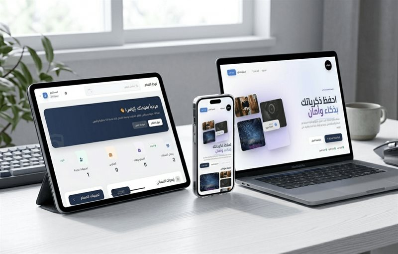
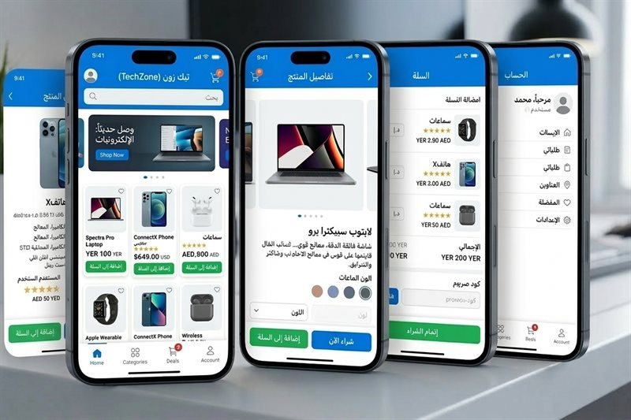
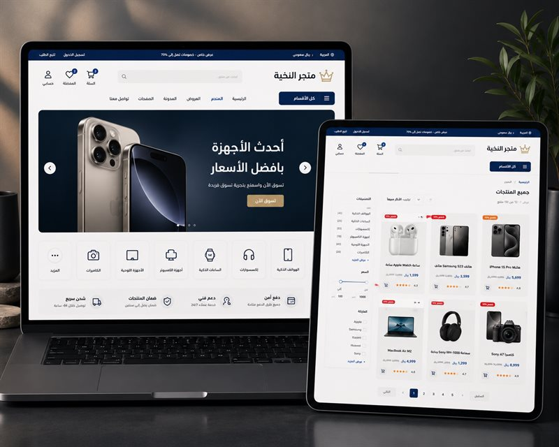
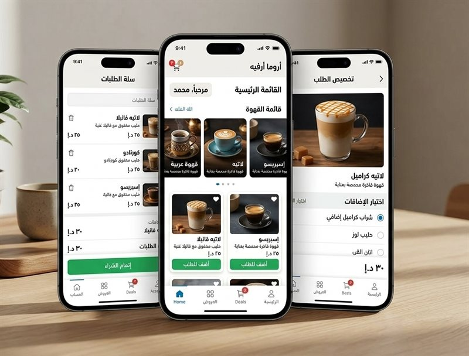
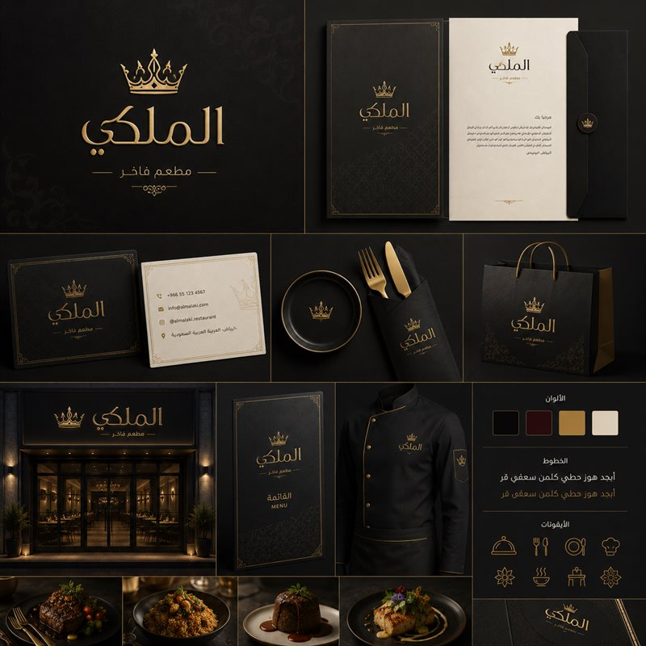

تبدأ مشروعًا أو منتجًا جديدًا
نرتب الفكرة والواجهة والمسار التقني بحيث تكون نقطة البداية مفهومة وقابلة للتنفيذ.
من الموقع والمتجر إلى التطبيق والهوية الرقمية، نبني تجربة مترابطة تساعد مشروعك على الظهور بشكل أوضح وتمنح عميلك طريقًا أسهل للوصول إليك.



وصل تك تعمل مع المشاريع التي تحتاج حضورًا رقميًا أو منتجًا رقميًا أكثر وضوحًا. نربط بين التصميم والتنفيذ حتى لا ينتهي المشروع بواجهة جميلة منفصلة عن ما يحتاجه المستخدم أو النشاط.


قد تكون في بداية الفكرة، أو لديك مشروع قائم، أو تحتاج إلى جمع أجزاء حضورك الرقمي في تجربة أكثر اتساقًا.
نرتب الفكرة والواجهة والمسار التقني بحيث تكون نقطة البداية مفهومة وقابلة للتنفيذ.
نراجع ما هو موجود ونحدد أين يحتاج التصميم أو البنية أو سهولة الاستخدام إلى تحسين فعلي.
نربط بين الموقع أو المتجر والهوية والمحتوى بدل أن تظهر كل نقطة من المشروع بشكل منفصل.
نظمنا الخدمات حسب طبيعة العمل: ما يبنيه العميل ويستخدمه، وما يصنع حضور المشروع ويقويه.
منصة متخصصة لإدارة ومشاركة الصور بخصوصية عالية ونظام وصول للعملاء.
تجربة متجر إلكتروني تركز على سهولة التصفح والطلب.
متجر لعرض الأجهزة والإلكترونيات بتصنيفات واضحة وتجربة طلب سريعة.
نظام بصري يشمل الشعار والألوان وتطبيقات الهوية على المطبوعات والتغليف.
نركز على قرارات تجعل المشروع أوضح للمستخدم وأسهل في التطوير والمراجعة، بدل إضافة مؤثرات أو تفاصيل لا تخدم الهدف.
شاهد طريقة العملنحدد ما يحتاجه المشروع قبل أن نقرر شكل الصفحة أو التقنية.
نرتب المحتوى والأفعال حسب ما يحتاجه الزائر، لا حسب شكل القالب.
لا نفرض نفس السيناريو على كل مشروع؛ الحل يتكيف مع احتياجه.
المراحل والقرارات تكون مفهومة وقابلة للمراجعة بدل العمل كصندوق مغلق.
هذه نسخة مختصرة فقط؛ التفاصيل الكاملة موجودة في صفحة “كيف نعمل”.
نفهم الهدف والجمهور والاحتياج الحالي.
نرتب المحتوى والتجربة ونحدد الحل المناسب.
نحوّل الخطة إلى منتج فعلي ونراجع التفاصيل.
نجهز النسخة للإطلاق وتستمر المتابعة حسب المشروع.
أسئلة مرتبطة مباشرة بالمواقع والحلول الحالية، بدون وعود أو أرقام غير مثبتة.
كل الأسئلة الشائعةنعم، المواقع التي ننفذها تُبنى بتجربة متجاوبة مع الجوال والتابلت والكمبيوتر.
نعم، يمكن إضافة لوحة تحكم لإدارة المحتوى حسب طبيعة المشروع واحتياجه.
نعم، يمكن المساعدة في اختيار وربط الدومين والاستضافة المناسبة للمشروع.
تعتمد المدة على حجم المشروع ومتطلباته، ويتم تحديدها بعد فهم النطاق المطلوب.
شاركنا نوع المشروع وما الذي تحتاجه الآن، ونبدأ من صورة أوضح بدل محادثة عامة.